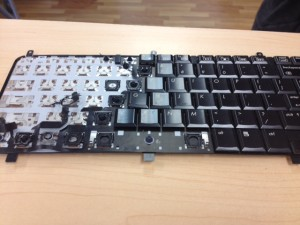

Teach Dogs to Code!

DONATE!
Rusty, a four year old German Shepard from Portland, Oregon studied web design, learning html and CSS. After only one week, Rusty learned how to tap his paw repeatedly on the keyboard. He got a treat as a reward.
During his second week, Rusty moved on to more advanced techniques. When his code failed to work, he expressed his frustration by chewing the keyboard.
Keyboard donations are needed!